arXiv 2503.14492 · cs.CV · v2 2025 年 4 月 1 日 · NVIDIA 技术报告 · 中文精读
Cosmos-Transfer1: Conditional World Generation with Adaptive Multimodal Control
作者署名 NVIDIA，正文附录 B 列出 24 位核心贡献者（Maciej Bala、Tiffany Cai、Francesco Ferroni、Sanja Fidler、Dieter Fox、Ming-Yu Liu、Ting-Chun Wang、Xiaohui Zeng 等）、15 位贡献者和 6 位致谢。arXiv 摘要页写作 “NVIDIA: Hassan Abu Alhaija and 38 other authors”。
关于这份精读。我读的是 arXiv v2（2025 年 4 月 1 日），v1 是 2025 年 3 月 18 日。按原文顺序覆盖正文 8 节和附录 A、B，小节编号和原文一致，用自己的话写，不是逐字翻译。原文只有两个编号公式 (1)(2)，照原编号排；表 1 到表 5 的数字照录（原文的粗体和下划线没有照搬）。
许可和原图。arXiv 摘要页登记的许可是 CC BY 4.0。但 PDF 第 1 页页脚印着 “© 2025 NVIDIA. All rights reserved.”，两者字面上矛盾（见读者注 1）。这一批 Cosmos 系列的页面由站点作者决定放原图：图 1 到图 12 从 arXiv PDF 用 200 dpi 渲染后裁切，转成 webp，没有改图的内容。每张图下写了作者、出处、许可和看原图的链接。图下的文字是我写的。
代码。官方仓库 nvidia-cosmos/cosmos-transfer1，我读的是 commit 5005e82（2026-06-07），只读，没有运行，也没有下载权重。代码是 Apache 2.0，权重是 NVIDIA Open Model License。这个提交比论文晚一年多，README 已经声明仓库不再积极开发、建议迁到 Cosmos 3（见 Cosmos 3 精读），中间还加了关键点控制、蒸馏版、多视角等后续功能。论文和代码不一致的地方两边都写。
标成“读者注”的框是我核算或对照的结果，不属于论文，页尾有汇总。
arXiv 摘要页的许可链接指向 CC BY 4.0（我在 2026-11-16 抓取摘要页核对过，链接是 licenses/by/4.0/）。PDF 第 1 页页脚却是 “© 2025 NVIDIA. All rights reserved.”。同站的 SONIC 页遇到过同样的情形（CC BY-SA 对 All rights reserved）。本页按 arXiv 登记的许可和站点作者的决定放了原图，这一点列在这里，读者要再转载时请自己判断。
Cosmos-Transfer1 是一个“条件视频生成”模型：给它一段或几段结构视频（模糊视频、边缘、深度、分割，自动驾驶版还有高精地图和激光雷达投影），再加一句文字，它生成一段 5 秒、1280×704、24 fps 的逼真视频，结构跟输入对齐，外观按文字改。底座是 Cosmos 平台里的 Cosmos-Predict1-7B-Video2World，一个 28 层的视频 DiT。
读完我认为最值得记住的三点：控制分支只有 3 个 block 而且分开训练，所以加减模态不用重训；权重图在代码里最终落到 44×80×16 的 token 网格上，比像素粗得多（读者注 4）；表 1 正文说等权重模型“深度重建最好”，但表里去掉分割的那一行更好（读者注 8）。
问题。多模态可控世界生成：输入是分割、深度、边缘等视频，它们在不同位置、不同时刻规定了目标世界的一部分，生成问题因此变简单。这种能力的一个直接用途是缩小 CG 仿真器和真实世界的差距：仿真器几乎免费给出深度和分割，用它们做条件，就能在保持场景结构和语义的同时把渲染画面变真实。
做法。在 Cosmos-Predict1（NVIDIA 2025，即 Cosmos 平台论文）的 DiT 世界模型上，用一种新的 ControlNet 设计加多模态控制分支。\(N\) 种模态就有 \(N\) 个分支，分开训练，推理时融合。
时空自适应。对分支输出施加时空控制图，规定每个模态在每个位置、每个时刻的权重。权重越高，该模态在那里的影响越大。例子：全局偏向深度可以保住几何；前景物体给边缘高权重、背景给低权重，可以保住前景细节而让背景多样。控制图也可以由另一个神经网络推断。
论文随后用实验验证，给出机器人 Sim2Real 和自动驾驶数据增强两个应用，并演示在 GB200 NVL72 机柜上做到实时。代码、权重、示例脚本都开源。
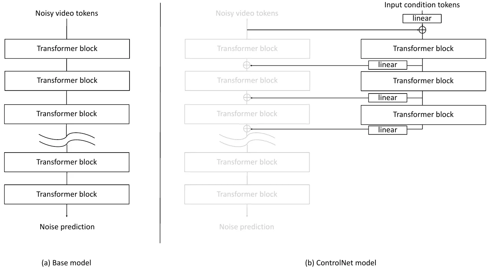
扩散模型的核心是去噪器。常见实现是图 1(a) 的 DiT：一串 transformer block，学预测加在视频 token 上的噪声。记去噪器为 \(D\)，输入带噪 token \(\mathbf x_\sigma\) 和噪声标准差 \(\sigma\)：
ControlNet 把底座扩展成条件模型。原版为 UNet 设计，Chen 等（PixArt-δ）把它搬到 DiT。本文的 DiT 版 ControlNet（图 1b）有底座和一个控制分支，控制分支是3 个 transformer block，论文说 3 个在控制效果和推理效率之间取得平衡。这 3 个 block 从底座对应的 block 继承权重初始化；每个 block 的输出经一个零初始化的线性层，加到底座对应 block 的激活上。训练时只优化新加的部分，底座冻结。记条件 token 为 \(\mathbf c\)：
ControlNet 继承底座的能力：底座接受文字提示，ControlNet 也接受。
图 1(b) 和图 2 都画了一条从“噪声视频 token”到控制分支入口的线：分支看的不只是条件，而是噪声 token 加条件 token。代码 general_dit_ctrl_enc.py 也是这样，但相加的位置不同：分支先把噪声 latent（拼上条件帧掩码，in_channels=17）走一遍复制来的 patch 嵌入和第 1 个 block，之后才加条件嵌入（第 299-312 行：x = block(x, …)，再 x = x + guided_hint），图上是在第 1 个 block 之前。条件视频本身先过同一个视频 tokenizer 变成 16 通道 latent（model_ctrl.py 的 encode_latent），再经 x_embedder2（2×2 patch）和一个 7 层 MLP（4096→16→16→32→32→96→96→256→4096，最后一层零初始化）。所以条件进入分支前有两道零初始化：嵌入 MLP 的末层和每个 block 后的 linear。
另外，论文式 (1)(2) 说网络“预测噪声”。代码用的是 EDM 式预条件化（denoiser_scaling.py：\(c_{\rm skip}=\sigma_d^2/(\sigma^2+\sigma_d^2)\)，\(\sigma_d=0.5\)），输出组合成 \(\hat{\mathbf x}_0\)。这是写法上的简化，不影响结论。
Cosmos-Transfer1 是对 Cosmos-Predict1 扩散世界模型做后训练得到的。设 \(\mathbf c_1,\dots,\mathbf c_N\) 是 \(N\) 种模态的条件视频。
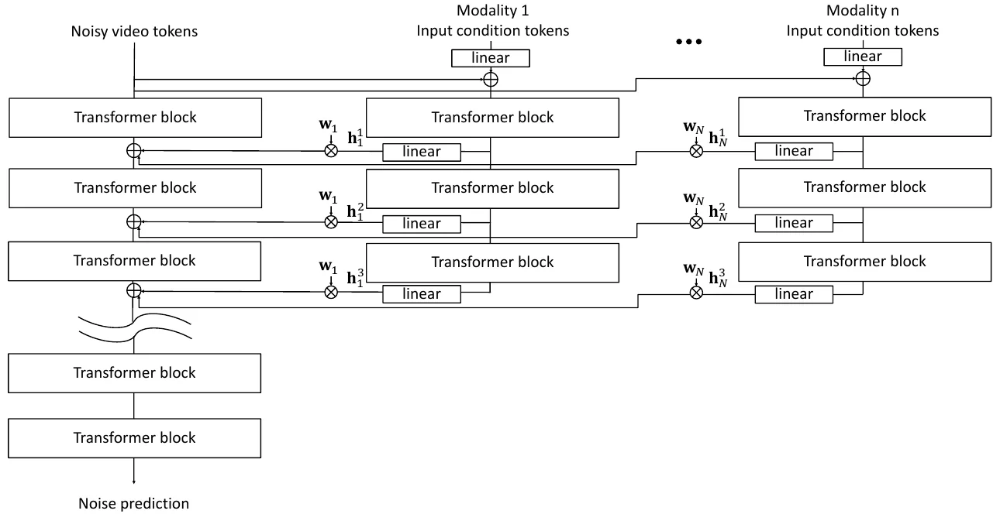
时空控制图。引入 \(\mathbf w\in\mathbb R^{N\times X\times Y\times T}\)，\(X,Y,T\) 是视频宽、高、帧数。记第 \(i\) 个分支第 \(j\) 个 block 的激活为 \(\mathbf h_i^j\in\mathbb R^{X\times Y\times T}\)，权重的第 \(i\) 片为 \(\mathbf w_i\)，加回底座的量是逐元素乘积 \(\mathbf w_i\cdot\mathbf h_i^j\)。也就是说，底座第 \(j\) 个 block 之后加上
（这一行是我按正文写成的式子，原文没有编号。）控制图可以手工设计，可以按对模态的先验用启发式规则得出，也可以训练一个网络来预测。某个时空位置上各模态权重之和大于 1 时，把这一位置的权重归一化，使其和为 1。
分开训练，推理时融合。每个控制分支按 §2 的方式单独训练。相比一次训练所有分支有三个好处：省显存，一次只需把一个分支放进显存，大规模视频训练里这能减轻实现负担；不同模态可以用不同的数据训练，因为有些模态的配对数据难得；更灵活，训练完后可以随时增删模态。
归一化。inference_utils.py 的 load_spatial_temporal_weights（第 1050-1115 行）先把负值截成 0，再做 \(\mathbf w\leftarrow\mathbf w/\max(\sum_i\mathbf w_i,\,1)\)：和小于 1 不动，大于 1 才除。这和论文一致。所以“四模态都给 1”实际是每个 0.25；“四模态都给 0.5”也是每个 0.25；只给两模态各 0.5 则不变。权重不写时默认 0.5（第 1260-1262 行）。
粒度。论文写 \(\mathbf w\) 的尺寸是视频的 \(X\times Y\times T\)。代码里权重图（可以是 .pt 文件，2D 或 3D）先插值到像素尺寸，然后在 resize_control_weight_map 里再三线性插值到 token 网格：第 1 帧单独一层，其余帧压到 \(T-1\) 层，空间是 latent 的一半（world_generation_pipeline.py:601，(t, h // 2, w // 2)）。1280×704、121 帧时就是 16×44×80：每个权重值管 16×16 像素、8 帧。所以细到像素的掩码（例如图 6 的自行车辐条）在模型里会被平均成软边。乘法发生在零初始化 linear 之后（general_dit_ctrl_enc.py:315-323），和图 2 的画法一致。
自己画的 · 11 幕 3D 框架动画
整个框架拆成 11 幕：总览、四种控制视频怎样从输入视频算出来、56,320 个 token、单个 ControlNet 和零初始化、多分支加权融合（第 5 幕）、归一化当场算（第 6 幕）、前景/背景权重图、分开训练和算力、采样与 4K 放大、三张结果表、64 卡实时。可以暂停、拖进度、旋转画面、切换开关。
两个模型。第一个是在 Cosmos-Predict1-7B-Video2World 上后训练得到的 Cosmos-Transfer1-7B。第二个是自动驾驶专用版，从 Cosmos-Predict1-7B-Video2World-Sample-AV（在行车记录仪视频上微调过的版本）后训练，叫 Cosmos-Transfer1-7B-Sample-AV。
训练。7B 版的控制分支用 Cosmos 平台论文里的高质量微调数据集训练。单模态时（即普通 ControlNet）记作 Cosmos-Transfer1-7B [模态名]，例如 [Depth]。每个分支用 1024 张 H100 训练 2 到 4 周，视模态而定。一次推理生成 5 秒、1280×704、24 fps 的视频，即 56K 个 token。
token 数。原文脚注 2 用 Cosmos-Tokenize1-CV8x8x8-720p（时间、宽、高各压 8 倍的因果视频 tokenizer），再 2×2 patchify：\(1280/8/2=80\)，\(704/8/2=44\)，\((121-1)/8+1=16\)，\(80\times44\times16=56{,}320\)。我算的和原文一致。代码训练配置 ctrl_7b_tp_121frames.py 的 latent_shape=[16, 16, 88, 160]（通道、隐帧、高、宽）也对得上。121 帧 / 24 fps = 5.04 秒。
算力（我的计算）。每个分支 \(1024\times24\times7\times2=344{,}064\) 到 \(688{,}128\) H100 小时（2 到 4 周）。7B 版四个模态加起来约 138 万到 275 万 H100 小时，还不算 Sample-AV 的两个分支和 4K 放大器。论文没有给总数。
7B 版的四种模态：
| 模态 | 怎样从输入视频得到 | 保住什么 | 论文说的训练增强 |
|---|---|---|---|
| Blur visual [Vis] | 双边滤波模糊 | 原色和大致形状，只改纹理细节；适合把 CG 渲染变真实 | 随机化双边滤波参数 |
| Edge [Edge] | 逐帧 Canny 边缘 | 整体结构，其余交给模型发挥 | 随机化 Canny 阈值 |
| Depth [Depth] | DepthAnything2，归一化到 [0, 1] | 3D 几何 | 未提 |
| Segmentation [Seg] | GroundingDINO 在首帧按描述里的名词检测，SAM2 在全视频分割；颜色随机，只区分物体不代表类别 | 分割布局，自由度高 | 颜色随机 |
模糊。论文只说双边滤波。代码 config/transfer/blurs.py 的 random_blur_config 是三选一：只用双边 50%、只用高斯 30%、两者叠加 20%；再随机先缩小 1 到 4 倍再放大（downscale_factor=list(range(1, 5))）。双边滤波参数随机范围：直径 15 到 50、颜色 σ 100 到 300、空间 σ 50 到 150、迭代 1 到 4 次。
边缘。control_input.py:558-575：训练时下阈值随机取 20 到 99，上阈值 = 下阈值 + 50 到 149（不超过 255）；推理默认 “medium”，即 100 / 200，另有 very_low 20/50 到 very_high 300/400 五档。
深度。代码 depth_anything.py:120 按整段视频的 min-max 归一化，和论文的 [0, 1] 一致（存成 0 到 255）。
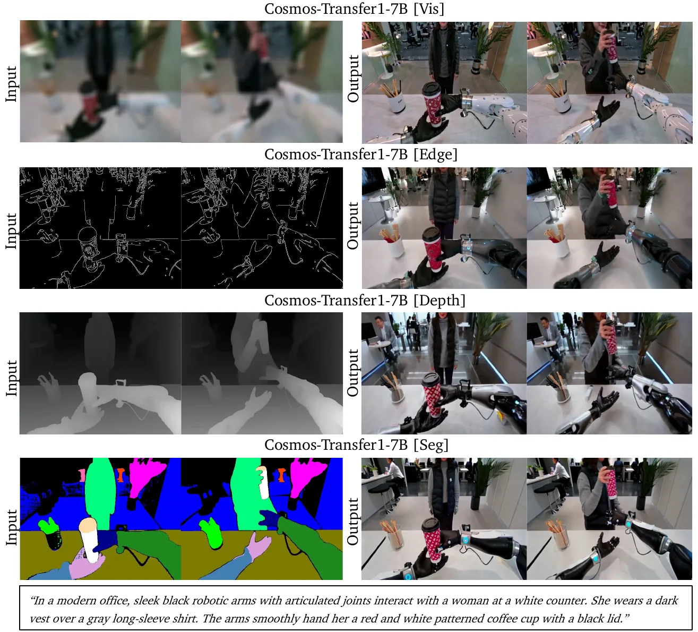
Sample-AV 的数据。自动驾驶里常用的感知信号是带动态 3D 框的高精地图，激光雷达是 RGB 的补充。作者整理了 RDS-HQ（Real Driving Scene HQ）：65K 段 20 秒环视视频（约 360 小时），带 10 Hz 激光雷达，用 NVIDIA 驾驶平台采集，每段有稠密描述（相机安装位置、他车密度等）。
\(65{,}000\times20\ \text{s}=1{,}300{,}000\ \text{s}=361\) 小时，和“约 360 小时”一致。这说明 360 小时按“段数 × 20 秒”计，一段环视视频算一份，不是把每个相机分开计时；如果按 6 路相机分开算会是约 2170 小时（相机路数论文没写，这是我的推断）。
Sample-AV 的两种模态：
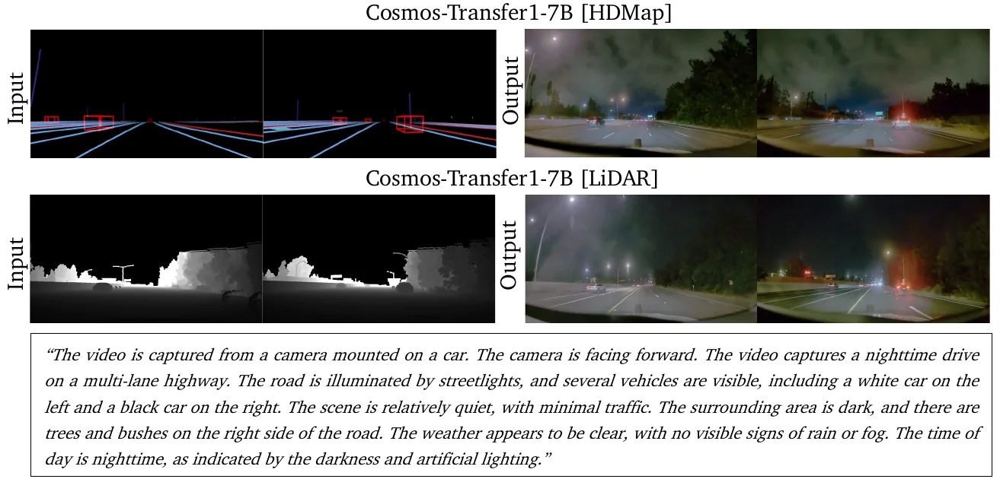
4K 放大器。另外训练一个 Upscale ControlNet，把生成的 720p 视频放大到 4K。训练输入是用 Real-ESRGAN 的退化方法弄坏的高分辨率视频随机裁块，学习恢复原块。推理时把 4K 输出分成 3×3 个有重叠的块，每个去噪步对每块各推理一次，重叠区取平均，保证接缝处平滑。记作 Cosmos-Transfer1-7B-4KUpscaler。
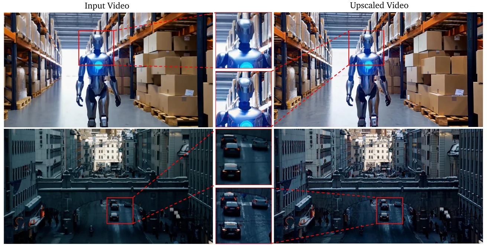
代码 inference_utils.py:350-362 的 get_upscale_size：16:9 时目标宽 = \(1280\times3-256=3584\)，高 = \(704\times3-\lfloor256\times9/16\rfloor=2112-144=1968\)。3×3 块的重叠是宽 \((3\times1280-3584)/2=128\)、高 \((3\times704-1968)/2=72\) 像素。所以模型实际生成的画布是 3584×1968（705 万像素，是 3840×2160 的 85.0%），解码拼接后再用双三次插值放到 \(1280\times3\)×\(704\times3\)=3840×2112（world_generation_pipeline.py:408）。拼接分两层：每个去噪步在 latent 上合并（model_ctrl.py:321），最后解码出的像素块再按线性渐变权重混合，不是简单平均（merge_patches_into_video）。论文的“3×3、重叠区平均”是对的，但最终尺寸不是标准 UHD。
§5.1 比较单模态和等权重多模态；§5.2 给出自动生成时空控制图的方法并分析；§5.3、§5.4 是机器人和自动驾驶的案例研究。
TransferBench。作者整理的评测集，600 段视频，三类各 200 段：机械臂操作从 AgiBot World（论文）随机抽取；驾驶从 OpenDV（论文）抽取；第一人称日常场景从 Ego-Exo4D（论文）抽取。TransferBench 本身我没有找到公开下载（未核实）。
指标分三类：
论文没说 \(K\) 取多少；§5.3 的机器人实验是每个场景 6 个提示。
结论先说：单模态各自在“自己的”指标上最好，但等权重融合四个模态的质量分最高（8.54）。稠密的模态（模糊、边缘）对齐好、多样性低；稀疏的（深度、分割）反过来。
三种设置：只用一个模态；去掉一个模态、其余等权；四个全用、等权（每个 0.25）。
表 1 · TransferBench 上的各种配置。Vis / Edge / Depth / Seg 对齐分别用 Blur SSIM、Edge F1、Depth si-RMSE、Mask mIoU 衡量。
| 模型 | Blur SSIM ↑ | Edge F1 ↑ | Depth si-RMSE ↓ | Mask mIoU ↑ | Diversity LPIPS ↑ | Quality ↑ |
|---|---|---|---|---|---|---|
| Cosmos-Transfer1-7B [Vis] | 0.96 | 0.16 | 0.49 | 0.72 | 0.19 | 5.94 |
| Cosmos-Transfer1-7B [Edge] | 0.77 | 0.28 | 0.53 | 0.71 | 0.28 | 5.48 |
| Cosmos-Transfer1-7B [Depth] | 0.71 | 0.14 | 0.49 | 0.70 | 0.39 | 6.51 |
| Cosmos-Transfer1-7B [Seg] | 0.66 | 0.11 | 0.75 | 0.68 | 0.42 | 6.30 |
| Uniform Weights, no Vis | 0.68 | 0.13 | 0.57 | 0.67 | 0.37 | 8.02 |
| Uniform Weights, no Edge | 0.81 | 0.10 | 0.53 | 0.66 | 0.31 | 7.68 |
| Uniform Weights, no Depth | 0.83 | 0.15 | 0.52 | 0.69 | 0.25 | 7.49 |
| Uniform Weights, no Seg | 0.84 | 0.15 | 0.43 | 0.70 | 0.23 | 7.83 |
| Uniform Weights（四模态，各 0.25） | 0.87 | 0.20 | 0.47 | 0.72 | 0.22 | 8.54 |
单模态。Vis 的 Blur SSIM 最高（0.96），Edge 的 Edge F1 最高（0.28；原文脚注说 Edge F1 要求细边缘逐像素对齐，非常严格，所以所有方法都偏低）。Depth 和 Seg 在自己的指标上并不最好：Depth 的 si-RMSE 0.49，和 Vis 持平；Seg 的 Mask mIoU 0.68。论文的解释：远处背景的深度图大片均匀，SAM2 的分割多是大色块，约束稀疏，模型自由度大，单独用时重建就不那么准。
去掉一个。只去掉 Vis 时 Blur SSIM 最低（0.68），说明模糊视频给的稠密结构是高对齐的关键。多样性方面，去掉 Vis 或 Edge 使 LPIPS 升到 0.37 和 0.31；去掉 Depth 或 Seg 降到 0.25 和 0.23。所以模糊和边缘适合要精确对齐的任务（逼真风格迁移、受控环境的 Sim2Real），深度和分割适合要多样性的任务（数据增强用的新场景合成）。
四模态等权。Vis 和 Edge 对齐都排第二，论文认为是因为每个模态的权重只有 0.25，而单模态时是 1.0。质量分 8.54 最高。论文还说它的深度重建最好。
“深度重建最好”不成立。四模态等权的 si-RMSE 是 0.47，而 “no Seg” 是 0.43，更低（越低越好）。等权模型在深度上是第二。
“排第二”成立。Blur SSIM：0.96（Vis）之后是 0.87，再是 0.84；Edge F1：0.28 之后是 0.20，再是 0.16。
多样性的四个数成立：0.37、0.31、0.25、0.23 都和表一致。另外，单模态里稀疏模态的质量分（Depth 6.51、Seg 6.30）高于稠密模态（Vis 5.94、Edge 5.48），而任何多模态组合（7.49 到 8.54）都比任何单模态高 0.98 以上（7.49 − 6.51）。
结论先说：按前景 / 背景给不同模态不同权重确实有效：被加权的区域在对应指标上明显变好，例如前景 Vis 权重从 0 到 0.5，前景 Blur SSIM 从 0.43 升到 0.81。
SalientObject 算法。让一个视觉语言模型（引用 GPT-4 技术报告）把预先提好的 GroundingDINO + SAM2 掩码分成前景和背景。给它参考帧、完整描述和每个掩码对应的短语，问每个短语是否是场景里显著的前景物体。由此得到一张时空的前景 / 背景权重掩码。
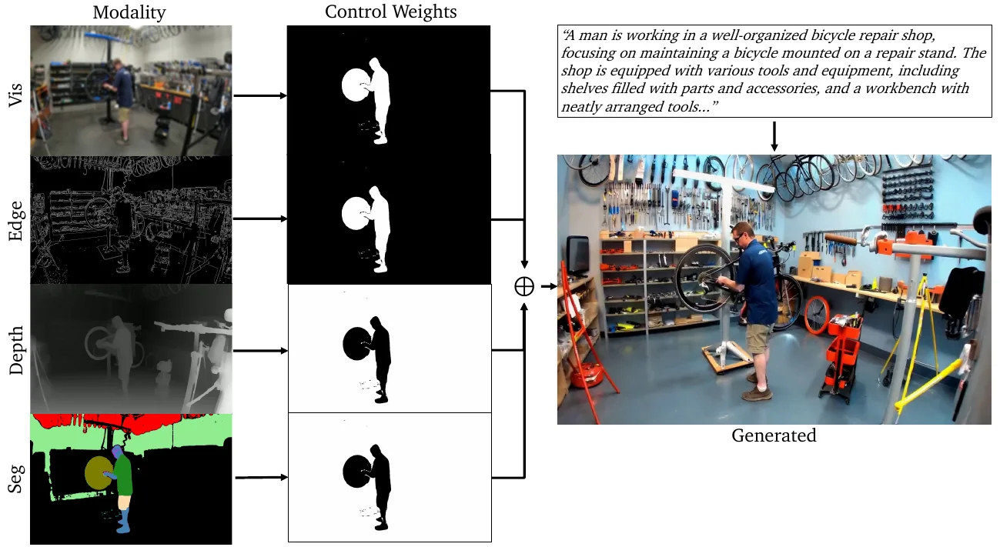
图 6 前景 Vis 和 Edge 各 0.5，背景 Depth 和 Seg 各 0.5。这模拟一种常见需求：显著物体贴近原视频，背景多样。因为 Vis、Edge 约束更强（自由度低），Depth、Seg 更松（自由度高），前者给前景、后者给背景就行。
定量实验一（图 7）。前景用 Edge 和 Vis，背景用 Depth 和 Seg，逐个模态把权重设为 0、0.333、0.5，看受影响区域的对齐指标。前景 Vis 权重升高，前景 Blur SSIM 从 0.43 到 0.81，Pearson 相关 0.93；背景 Depth 权重升高，背景 si-RMSE 从 1.88 到 0.52，相关系数 −0.92。
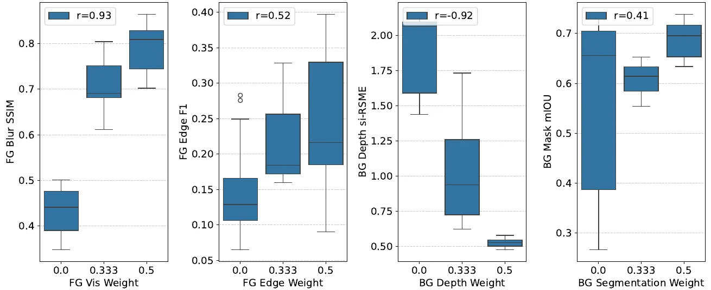
图 7 是矢量图。我用 pdftocairo -svg 导出第 11 页，按每个子图的虚线网格（例如 0.4 到 0.8）标定，读出箱子的下四分位、中位数、上四分位（脚本在我的工作目录，结果如下，误差在 0.001 量级）：
| 子图 | 权重 0 | 权重 0.333 | 权重 0.5 |
|---|---|---|---|
| 前景 Blur SSIM | 0.390 / 0.441 / 0.476 | 0.681 / 0.691 / 0.752 | 0.744 / 0.809 / 0.829 |
| 前景 Edge F1 | 0.106 / 0.129 / 0.166 | 0.172 / 0.184 / 0.256 | 0.185 / 0.216 / 0.330 |
| 背景 si-RMSE | 1.591 / 2.064 / 2.094 | 0.725 / 0.938 / 1.260 | 0.503 / 0.528 / 0.547 |
| 背景 Mask mIoU | 0.387 / 0.656 / 0.705 | 0.584 / 0.614 / 0.633 | 0.653 / 0.696 / 0.716 |
正文的“0.43 → 0.81”和“1.88 → 0.52”不是中位数：权重 0 处中位数是 0.441 和 2.064。1.88 落在 1.59 到 2.09 的箱子里，比中位数低不少，所以这两个起点更像是均值（论文没说，未核实）。终点 0.81 和 0.52 与表 2 第一行的前景 Blur SSIM 0.81、背景 si-RMSE 0.52 相同，这两个设置正是同一个配置（前景 Vis 0.5、背景 Depth 0.5）。背景 Seg 那一张不是单调的：中位数 0.656 → 0.614 → 0.696，权重 0 时箱子从 0.39 拉到 0.71，r 只有 0.41。
定量实验二（表 2）。两种控制图：前景 Edge + Vis、背景 Depth + Seg；或者反过来。
表 2 · SalientObject 控制图下的 TransferBench 结果。前 8 列是前景（FG）和背景（BG）各模态的权重，指标按区域分开算。
| FG 权重 | BG 权重 | Blur SSIM ↑ | Edge F1 ↑ | si-RMSE ↓ | Mask mIoU ↑ | Diversity ↑ | Quality ↑ | |||||||||||
|---|---|---|---|---|---|---|---|---|---|---|---|---|---|---|---|---|---|---|
| Vis | Edge | Depth | Seg | Vis | Edge | Depth | Seg | FG | BG | FG | BG | FG | BG | FG | BG | FG | BG | |
| 0.5 | 0.5 | 0 | 0 | 0 | 0 | 0.5 | 0.5 | 0.81 | 0.71 | 0.27 | 0.14 | 0.37 | 0.52 | 0.77 | 0.68 | 0.01 | 0.33 | 8.29 |
| 0 | 0 | 0.5 | 0.5 | 0.5 | 0.5 | 0 | 0 | 0.68 | 0.93 | 0.17 | 0.25 | 0.38 | 0.40 | 0.77 | 0.75 | 0.12 | 0.03 | 8.08 |
把 Edge、Vis 从前景挪到背景，背景的 Blur SSIM 和 Edge F1 明显升高，前景下降。Vis 和 Edge 在深度和分割对齐上也不差，和表 1 一致。把一个区域从 Vis / Edge 换成 Depth / Seg，多样性明显上升（前景 0.01 → 0.12，背景 0.03 → 0.33），画质相当，深度和分割对齐仍然不错（尤其和图 7 里无条件的基线比）。这和图 6 的定性观察相符。
正文的数都对得上：背景 Blur SSIM 0.71 → 0.93、Edge F1 0.14 → 0.25；前景 0.81 → 0.68、0.27 → 0.17；多样性前景 0.01 → 0.12（行 1 → 行 2）、背景 0.03 → 0.33（行 2 → 行 1）。
两点值得注意。其一，背景用 Vis / Edge 时背景 Mask mIoU 是 0.75，比用 Seg 本身的 0.68 还高；前景两种设置都是 0.77。也就是说，分割对齐最好的反而不是分割控制，和表 1 里 Seg 单模态 0.68 低于 Vis 单模态 0.72 是同一个现象。其二，两行的质量分 8.29 和 8.08 都低于表 1 的四模态等权 8.54，§5.2 没有讨论这个差距。每个位置只有两个模态（各 0.5）而等权时有四个（各 0.25），这可能是原因，但只是我的推断。
结论先说：用时空控制图让机器人（前景）由 Edge（加或不加 Vis）控制、背景由 Seg 控制，比单模态得到更高的质量分和前景分割对齐，同时多样性接近最高。
数据。用 NVIDIA Omniverse 和 Isaac Lab（Orbit 论文）在一个基础厨房场景里做了 20 个机器人操作场景：厨房程序化生成，家具有铰接，任务是开关柜门和取放常见厨房物品，机器人运动由自动任务与运动规划算法（Garrett 等 2020）算出。每个场景准备 6 个提示词（不同光照、场景细节、环境），输出 RGB、分割和深度。共 \(20\times6=120\) 段视频。
两种设置（机器人掩码从语义分割得到）：
表 3 · 机器人仿真数据上的结果。FG Mask mIoU 只在前景机器人区域上算。
| 模型 | Blur SSIM ↑ | Edge F1 ↑ | Depth si-RMSE ↓ | Mask mIoU ↑ | FG Mask mIoU ↑ | Diversity LPIPS ↑ | Quality ↑ |
|---|---|---|---|---|---|---|---|
| Cosmos-Transfer1-7B [Vis] | 0.95 | 0.19 | 0.82 | 0.65 | 0.56 | 0.20 | 9.11 |
| Cosmos-Transfer1-7B [Edge] | 0.63 | 0.40 | 1.01 | 0.63 | 0.57 | 0.36 | 7.70 |
| Cosmos-Transfer1-7B [Depth] | 0.66 | 0.13 | 0.84 | 0.59 | 0.57 | 0.43 | 9.17 |
| Cosmos-Transfer1-7B [Seg] | 0.47 | 0.10 | 1.34 | 0.55 | 0.54 | 0.60 | 9.29 |
| Cosmos-Transfer1-7B, Setting1 | 0.51 | 0.12 | 1.30 | 0.59 | 0.61 | 0.57 | 9.57 |
| Cosmos-Transfer1-7B, Setting2 | 0.50 | 0.14 | 1.41 | 0.60 | 0.63 | 0.58 | 10.42 |
单模态在自己的指标上更高（Vis 的 Blur SSIM 最高），但质量分低于两种多模态设置。Seg 的质量分较高、多样性最高，但 Blur SSIM、Edge F1、Mask mIoU 较低，论文认为它能生成多样背景，但可能给前景机器人带来瑕疵。两种设置在质量分、多样性、前景 mIoU 上都排前三，其余指标较均衡。
“都在前三”成立。质量分 10.42、9.57、9.29（Seg）；多样性 0.60（Seg）、0.58、0.57；前景 mIoU 0.63、0.61，第三是 0.57（三个单模态并列）。
“其余指标较均衡”要打折扣。两种设置的 Blur SSIM（0.51、0.50）、Edge F1（0.12、0.14）、si-RMSE（1.30、1.41）都排在后段，比 Seg 单模态好不了多少；它们的整帧指标被大面积背景拖低了，前景的改进只在 FG mIoU 一列看得到（0.54 → 0.61、0.63）。论文没有给前景区域的 Blur SSIM 或 Edge F1。
Setting 1 前景实际是 0.5 / 0.5。前景 Edge 和 Vis 都给 1，和是 2 > 1，按 §3 的归一化各变成 0.5。代码 auxiliary/robot_augmentation/spatial_temporal_weight.py:55-63 的两种设置和论文完全一致（vis/edge 前景 1.0，seg 背景 1.0），归一化在推理时由 load_spatial_temporal_weights 做。所以 Setting 1 和 Setting 2 前景的 Edge 实际权重是 0.5 对 1.0，这也许是 Setting 2 前景 mIoU 更高的一个原因（我的推断）。
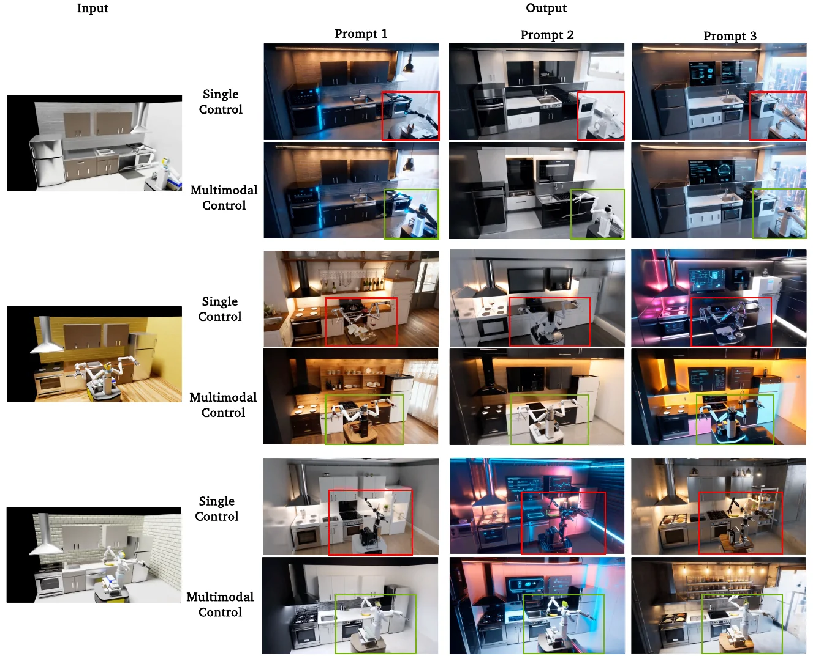
论文对图 8 的总结：Transfer1 加了场景细节、复杂阴影和自然光照，显著提升了真实感和多样性；用控制图的完整模型能更好地保住机器人形状、减少断裂伪影。它可以在保持物理合理的机器人动力学的同时调光照、颜色、纹理和细节，也能加入新的背景物体。
结论先说：融合 HDMap 和 LiDAR 后车道 mIoU 最高（51.55），3D 框 mAP 和重投影误差接近只用 LiDAR 的最优值。
与机器人不同，自动驾驶从量产车和车队持续积累海量真实数据，但分布长尾，关键是放大安全攸关的边缘案例的用途。可以把场景格式描述的干预作为条件，生成大量有用的视觉变体，用于测试和训练。
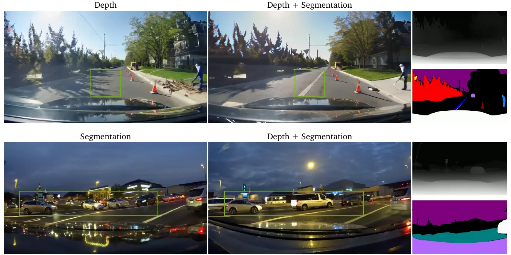
图 9 用通用的 7B 模型，等权 \(w_{\rm depth}=w_{\rm segment}=0.5\)。第一行加了分割后恢复了道路中间的实线，只用深度时没有；这条线很重要，因为场景里自车要临时借对向车道绕过锥桶围出的区域。第二行只用分割时同车道车辆朝向不合理，可能缺少几何线索；加上深度后朝向更合理。
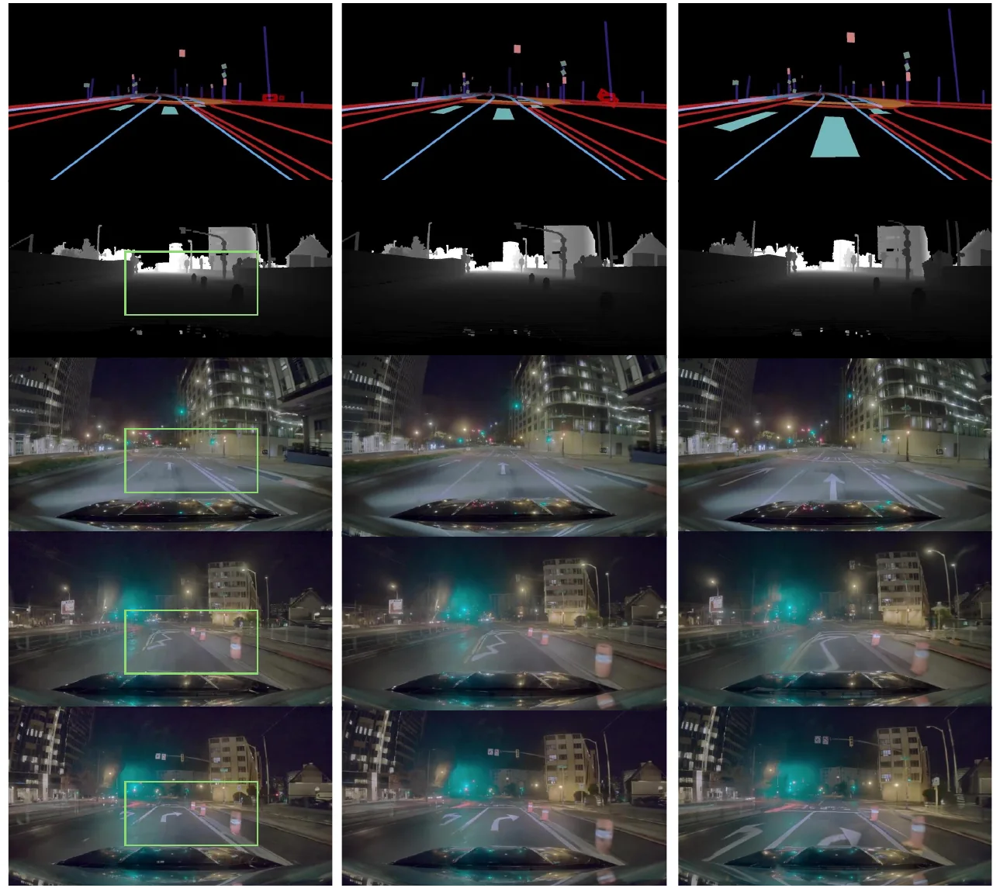
图 10 用 Sample-AV 模型，均匀标量 \(w_{\rm map}=0.3\)、\(w_{\rm lidar}=0.7\)。场景是最右车道被锥桶挡住，自车用右侧第二车道右转。只用 LiDAR 车道线错误；融合 HDMap 后车道布局明显更真实。图 11 是更多不同提示的例子。
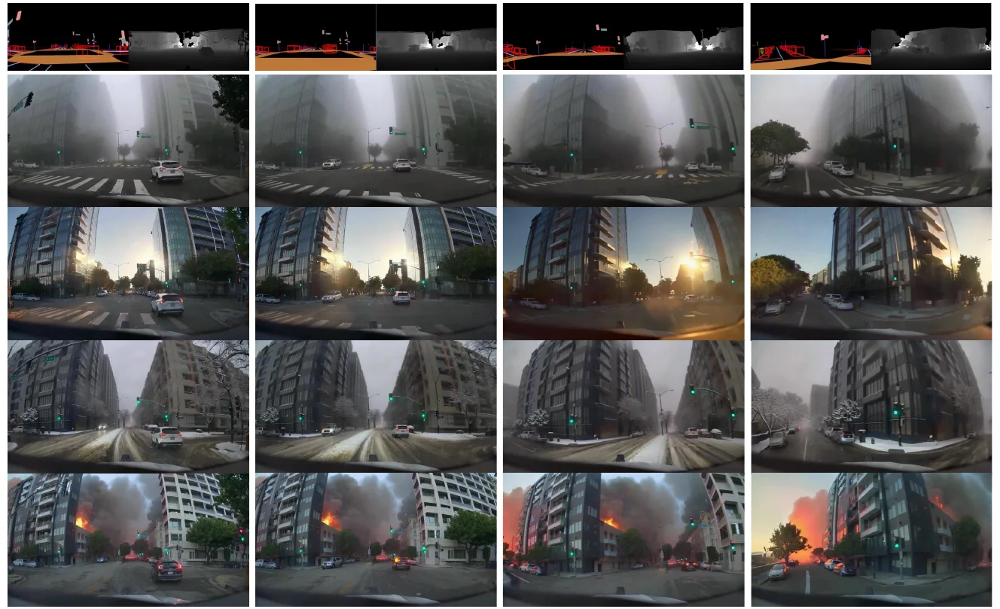
定量评测（表 4）。3D 框遵从：用基于 StreamPETR 和 Hydra-MDP 的 3D 检测方法，在生成视频上检测 3D 框，和真实视频对应的框比，算 IoU 阈值 0.2 的 mAP。高精地图遵从：用 grounded SAM2 分割车道，和真实车道标线算 IoU。LiDAR 的 3D 一致性：按 Zhou 等 2017 的光度重投影误差，只保留和 10 FPS 激光雷达扫描同步的帧，用激光雷达深度、已知相机位姿和框标注把每帧前向变换到下一个保留帧，和生成的下一帧算 L1。
表 4 · Sample-AV 在自动驾驶视频生成任务上的结果。
| 方法 | 3D-Bbox mAP ↑ | Lane mIoU ↑ | Reprojection Err. ↓ |
|---|---|---|---|
| Sample-AV [HDMap] | 41.89 | 50.37 | 9.46 |
| Sample-AV [LiDAR] | 46.50 | 48.19 | 8.60 |
| Sample-AV（HDMap + LiDAR） | 44.66 | 51.55 | 8.67 |
LiDAR 单模态的 mAP 最好、重投影误差最低，因为它给出最精确的空间条件和天然的 3D 信息；但缺少车道布局，车道 mIoU 最差。融合后车道 mIoU 最高，同时保持 mAP，重投影误差和 LiDAR 相当、比 HDMap 好。车道准确度是 AV 开发者最看重的指标之一。
“保持 mAP”是说 44.66 介于两者之间：比 LiDAR 低 1.84，比 HDMap 高 2.77。车道 mIoU 比 HDMap 高 1.18，比 LiDAR 高 3.36。重投影误差 8.67 对 8.60，差 0.07。表 4 没说用的是哪种权重；正文图 10 用的是 0.3 / 0.7，代码示例 assets/sample_av_multi_control_spec.json 也正好是 hdmap 0.3、lidar 0.7。我推测表 4 也用这组权重，未核实。另外三种方法都只有一个数，没有方差或样本数。
接仿真器。前面的例子都有真实场景布局作对应。也可以接物理传感器仿真：用 NVIDIA Omniverse AV 仿真 Blueprint 的 Sensor RTX API 仿真激光雷达深度。图 12 显示，虽然只在真实激光雷达上训练，模型能泛化到合成激光雷达；而且保留了互联网预训练带来的世界知识，能生成 AV 微调数据里没有的场景和效果。
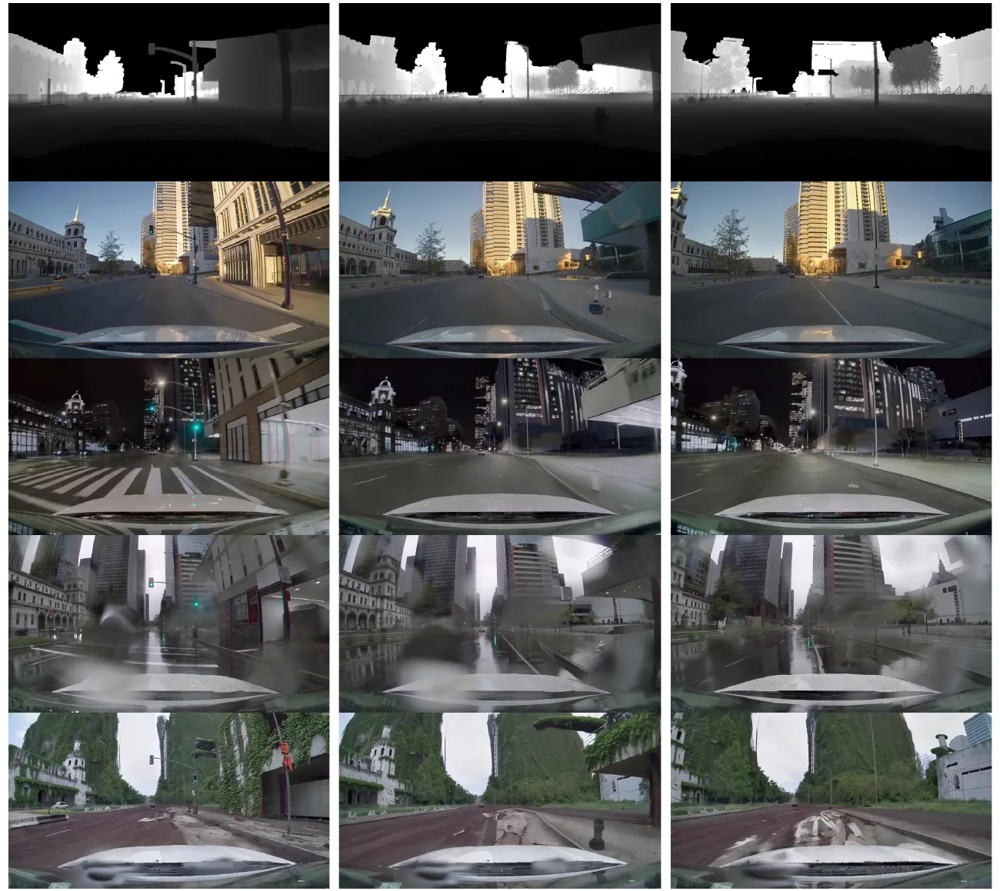
结论先说：64 张 B200 上，5 秒视频端到端 4.2 秒生成，扩散部分加速约 40 倍。
GB200 NVL72 把 36 颗 Grace CPU 和 72 张 Blackwell GPU 接在全互连的 NVLink 网络上，适合张量并行和上下文并行。和逐 token 生成、参数又多的 LLM 不同，Transfer1-7B 参数相对少，一次生成几万个 token。
并行策略。非注意力层纯数据并行，注意力层按头并行。每张 B200 有 192 GB HBM，放得下整个模型，所以把 56K token 的序列切到各卡上。扩散过程中唯一的通信在注意力：用 all-to-all，让每张卡拿到某一个头的完整 56K 序列。论文说这比流水线式地 all-gather 键值对好，不需要额外的规约，注意力也不会严重受内存带宽限制。模型有 32 个注意力头；无分类器引导用负提示代替无条件分支，正负两路的去噪互相独立，所以分给两组 GPU。于是注意力分布到 64 张卡，每张卡对 56K 个 query、key、value 做一个头的注意力。即使用 Blackwell FMHA 最大的 query 分块，每张卡的 SM 也能占满。
表 5 · 用不同数量的 GPU 生成 5 秒视频的时间。
| GPU 数 | 1 | 4 | 8 | 16 | 32 | 64 |
|---|---|---|---|---|---|---|
| 只算扩散 | 141.0 s | 39.3 s | 20.1 s | 10.3 s | 5.4 s | 3.5 s |
| 端到端 | 141.7 s | 40.0 s | 20.8 s | 11.0 s | 6.1 s | 4.2 s |
从 1 卡到 64 卡，扩散部分约 40 倍加速。扩散占工作量 99% 以上，也是唯一做了并行的部分。64 卡时 5 秒视频 4.2 秒生成，达到实时吞吐。
加速比和效率。扩散：\(141.0/39.3=3.59\)（4 卡，效率 89.7%）、7.01（8 卡，87.7%）、13.69（16 卡，85.6%）、26.11（32 卡，81.6%）、40.29（64 卡，62.9%）。“约 40 倍”成立。从 32 卡到 64 卡效率掉得最多。
固定开销。端到端减扩散在每一列都是 0.7 s（141.7 − 141.0、40.0 − 39.3、…、4.2 − 3.5），说明 tokenizer 解码等其余部分没有并行。“99% 以上”只在 1 卡成立（141.0 / 141.7 = 99.5%）；64 卡时扩散只占 3.5 / 4.2 = 83%，端到端加速是 141.7 / 4.2 = 33.7 倍。
实时。121 帧 / 24 fps = 5.04 秒，4.2 秒 < 5.04 秒，所以说“实时吞吐”成立；但这是生成完整一段的时间，不是逐帧低延迟。
64 是这个方案的上限。按头并行时每组最多 32 张卡（一卡一头），两组（正、负提示）共 64 张。表 5 停在 64 卡，没有用满 NVL72 的 72 张，原因就在这里（我的推断）。非注意力层每卡处理 56,320 / 32 = 1,760 个 token。
视觉域迁移。从分割图或草图生成逼真图像的研究很多（原文引了 Wang 等 2018、Park 等 2019 等十余篇），也扩展到视频合成（Wang 等 2018、2019，Mallya 等 2020 等），应用于内容创作、机器人、自动驾驶、VR/AR、游戏。
扩散模型的空间控制。分免训练方法和在预训练模型上加训练的方法，后者一般效果更好。代表是 ControlNet（论文）：加一个从预训练模型初始化的编码分支，只训练这个分支。之后有多种扩展；Chen 等（PixArt-δ）把它从 UNet 搬到 transformer。视频方面，Lin 等把图像 ControlNet 编码器改造到视频，Jain 等用掩码注意力做免训练的空间控制。
用生成模型增强仿真。早期用 GAN：Rao 等（RL-CycleGAN）把仿真图转真实并对齐 Q 值；Ho 等的 RetinaGAN 保住物体特征，在多个真实 RL 任务上有效。后来扩散模型取代 GAN：Zhao 等用带 ControlNet 的扩散模型把仿真语义图转成逼真驾驶图，伪影更少；Pronovost 等用潜扩散生成交通场景。视频生成模型也越来越多地被当作可学习的仿真器，NVIDIA 2025（Cosmos 平台）是一组开源的物理 AI 预训练模型。
在 Cosmos-Predict1 上加多模态控制分支和自适应加权，得到可控性高、质量好的条件世界生成。评测显示它能保住条件输入的场景结构，同时允许细粒度控制，可用于缩小仿真到真实的差距（机器人 Sim2Real、自动驾驶数据增强）。推理扩展策略在 GB200 NVL72 上达到实时吞吐。代码和模型开源。
为什么要。训练时 Transfer1 配的是详细描述，用户的提问往往短得多、风格也不同，这个域偏移会降低效果。所以训练一个扩写器，把各种输入提示对齐到训练时的提示分布。
沿用 Cosmos 平台的三条标准：忠实（不和原提示、条件视频冲突）、完整（保留并展开原提示的所有元素）、分布内（结构和长度和训练集的长提示一致）。
做法。微调一个 Pixtral-12B，输入条件视频（可以是分割、深度等任何模态）和用户提示，输出结构一致的详细提示。训练数据：从现有训练提示出发，用 Gemma-2-9B-it 生成保持忠实但风格多样的短提示，形成配对；每个模态 100 万段视频，所有模态一起用 FSDP2 训练一个 epoch。
论文举了两个例子。分割图 + “厨房里机器人从地上捡瓶子放到桌上” 扩写成一段描述木柜、花岗岩台面、白身黑关节头顶红灯的机器人等细节的长提示（扩写结果里还多出“把椅子放回原处”的动作，原提示没有）。深度图 + “一辆车在路上开” 扩写成行车记录仪视角、白天晴朗、两侧绿植、多车道、有摩托车等。
核心贡献者 24 位（按字母序）。分工摘要：Ming-Yu Liu 提出自适应多模态控制设计并统管项目；Ting-Chun Wang 和 Xiaohui Zeng 训练 7B 的各个 ControlNet；Ting-Chun Wang、Tiffany Cai、Pooya Jannaty 实现多模态推理；Fabio Ramos、Dieter Fox、Jinwei Gu、Yunhao Ge 整理机器人仿真数据；Yifan Lu、Xuanchi Ren、Tianchang Shen 整理 RDS-HQ；Jiashu Xu 和 Yunhao Ge 做提示词扩写器；Ali Hassani 和 Maciej Bala 做 GB200 NVL72 上的实时推理；Sanja Fidler 和 Huan Ling 指导 Sample-AV 部分，Hanzi Mao 指导 7B 部分。另有 15 位贡献者和 6 位致谢。
仓库包含推理、训练（预训练和后训练）、蒸馏代码。下表把论文的设定和 commit 5005e82 里能对上的配置并列。代码是 Apache 2.0，表里引用文件名、行号和配置键。
| 项目 | 论文 | 代码（5005e82） |
|---|---|---|
| 底座 | Cosmos-Predict1-7B-Video2World | config/base/net.py FADITV2Config：28 层，宽 4096，32 头，patch 2×2×1，3D RoPE，AdaLN-LoRA 256；训练配置另加可学习的逐块绝对位置嵌入 |
| 控制分支深度 | 3 个 block | num_control_blocks = 3，layer_mask=[i >= 3 …]（训练 ctrl_7b_tp_121frames.py:48,154，推理 cosmos-1-diffusion-control2world.py） |
| 零初始化 | 每个 block 后的 linear 零初始化 | zero_blocks[f"block{idx}"] = zero_module(nn.Linear(4096, 4096))；条件嵌入 MLP 的末层也零初始化（general_dit_ctrl_enc.py:56-69） |
| 条件怎样进分支 | 图 1：条件 token 加到噪声 token 上，再进第 1 个 block | 条件视频经 tokenizer 编成 latent，x_embedder2 + 7 层 MLP；在分支第 1 个 block 之后相加（读者注 3） |
| 注入底座 | 分支第 j 块 → 底座第 j 块 | 底座 general_dit.py:548：x = x + x_ctrl[name]，只有 block0 到 block2 有 |
| 权重与归一化 | 逐元素乘；和 > 1 时归一化 | \(\mathbf w/\max(\sum\mathbf w,1)\)；默认 0.5；权重图插值到 token 网格（读者注 4） |
| 多模态训练 | 分开训练，推理时融合 | 训练时 assert len(guided_hints) == 1 or not torch.is_grad_enabled()（第 196 行），只允许单模态训练；hint_dropout_rate = 0.3 只在把几个条件拼成一个输入时起作用 |
| 优化器 | 未给 | AdamW，lr \(=2^{-14.3}\approx4.96\times10^{-5}\)，weight decay 0.1，betas (0.9, 0.99)，eps 1e-10；预热 2500 步；EMA 开；张量并行 8，序列并行；底座 finetune_base_model=False |
| 算力 | 每分支 1024 张 H100，2 到 4 周 | 示例配置默认 DDP + TP 8，节点数由使用者定 |
| 采样 | 未给 | transfer.py：35 步，guidance 5（管线类的默认是 7），24 fps；求解器 res_sampler.py 的 2AB 多步法，σ 按 ρ = 7 的 Karras 序列从 70 降到 0.002；默认负提示是一段描述“老旧游戏、粗糙 CG”的文字 |
| 从输入视频起步 | 未提 | --sigma_max 70 默认；小于 80 时必须给输入 RGB 视频，先对它加噪到 σ = 70 再去噪（读者注 15） |
| 自动前景掩码 | §5.2 用 VLM 分前景 / 背景 | control_weight_prompt：用 GroundingDINO + SAM2 按给定名词出二值掩码（读者注 16）；不调用 VLM |
| 机器人设置 | Setting 1 / 2 | robot_augmentation/spatial_temporal_weight.py:55-63，与论文一致 |
| 4K 放大 | 720p → 4K，3×3 重叠块 | 3584×1968 画布，再插值到 3840×2112（读者注 7） |
| 多卡推理 | 按头并行 + all-to-all，正负提示分两组 | --num_gpus 设上下文并行（parallel_state.initialize_model_parallel(context_parallel_size=…)），注意力由 Transformer Engine 1.13 的 set_context_parallel_group 处理（读者注 14） |
| 扩写器 | 微调的 Pixtral-12B | --upsample_prompt，auxiliary/upsampler |
| 论文之后的新增 | — | 关键点控制（Transfer1pt1）、单步蒸馏的 Edge 模型（2025-08）、AV 单视角转多视角（2025-05）、区域提示词 |
我在仓库里搜 all_to_all、alltoall，没有结果。多卡推理走的是 Transformer Engine 的上下文并行：general_dit.py:583 调 set_context_parallel_group(cp_group, cp_ranks, torch.cuda.Stream())，没有传 cp_comm_type，所以用的是 TE 1.13 的默认通信方式（我记得是点对点的环形，未核实）。论文 §6 的“按头并行 + all-to-all + 正负提示分组”在这个仓库里看不到，表 5 的数字无法用开源代码直接复现。
transfer.py:81 默认 sigma_max=70.0；model_ctrl.py 的 get_x_from_clean 在给了输入视频时返回 \(\mathbf x_0+70\,\boldsymbol\epsilon\)，采样从这里开始，而不是从 EDM 的最大噪声 \(\sigma_{\max}=80\)（config/base/model.py:50）开始。σ = 70 已经接近纯噪声（数据标准差 0.5，信噪比 \(0.5/70\approx0.007\)），但仍保留一点原视频的低频信息。论文没有提到这一点；论文里的结果是否这样生成，不知道。机器人示例 assets/robot_sample_spec.json 也显式写了 "sigma_max": 70。
文档 examples/inference_cosmos_transfer1_7b.md 第 4 个例子在 vis 和 edge 上写 "control_weight_prompt": "robotic arms . gloves"，说会对 vis、edge 生成二值掩码（掩码内 0.5、外 0），于是机械臂区域四个模态各 0.25（四个 0.5 归一化），其余区域 depth、seg 各 0.5。但 diffusion/inference/preprocessors.py:72 的条件是 … and hint_key in ["seg"]，只有 seg 会触发掩码生成。照字面读，这个例子里 vis、edge 的提示被忽略，四个模态全图都是 0.5，归一化后处处 0.25，等于表 1 的等权设置。我没有运行代码，这是读出来的推断；也可能是有意改动而文档没更新。
每个分支训练时都是“底座冻结 + 一个分支、权重 1”，它学到的是一个加到底座前 3 个 block 上的残差。推理时多个分支的残差按权重相加。归一化规则 \(\mathbf w/\max(\sum\mathbf w,1)\) 保证每个位置注入的总权重不超过 1，也就是说总残差的“量”不超过训练时单个分支的量，底座不会看到训练时从未见过的大幅扰动（这是我对归一化动机的理解，论文没明说）。论文没有证明这种线性叠加一定好，它的证据是经验的：表 1 里任何多模态组合的质量分都高于任何单模态。代码第 196 行明确禁止训练时用多个分支，所以融合在训练中从未出现过。
按论文的结果，三条经验：
代码里权重写在一个 JSON 里，每个模态一项，control_weight 可以是标量，也可以是 .pt 文件（\(T\times H\times W\) 或 \(H\times W\)）。注意粒度只有 16×16 像素、8 帧（读者注 4），细小物体的掩码会被抹平。
以下各条都是本页加的核算或对照，不属于论文内容。点编号跳到对应位置。
论文没写、我也没找到的：TransferBench 的视频清单和 \(K\)（多样性用几个提示）；RDS-HQ 的公开下载（未核实）；表 4 用的权重；论文结果所用的采样步数、引导强度和 sigma_max；“1024 张 H100、2 到 4 周”分别对应哪个模态。
文中提到的数据集、模型和方法。链接在 2026 年 11 月 16 日用脚本核对过，结果见表后说明。
| 名称 | 是什么 | 主页 | 论文 |
|---|---|---|---|
| Cosmos-Transfer1 | 本文 | 代码 | 2503.14492 |
| Cosmos-Predict1 | 底座世界模型，本站精读 | github.com/nvidia-cosmos/cosmos-predict1 | 2501.03575 |
| AgiBot World | TransferBench 的机械臂部分 | agibot-world.com | 2503.06669 |
| OpenDV | TransferBench 的驾驶部分 | github.com/OpenDriveLab/DriveAGI | 2403.09630 |
| Ego-Exo4D | TransferBench 的第一人称部分 | ego-exo4d-data.org | 2311.18259 |
| Isaac Lab | §5.3 机器人仿真数据 | isaac-sim.github.io/IsaacLab | 2301.04195（Orbit） |
| Depth Anything V2 | 深度模态和深度指标 | depth-anything-v2.github.io | 2406.09414 |
| GroundingDINO | 分割模态的检测部分 | github.com/IDEA-Research/GroundingDINO | 2303.05499 |
| SAM 2 | 视频分割 | github.com/facebookresearch/sam2 | 2408.00714 |
| DOVER | 质量分 | github.com/VQAssessment/DOVER | 2211.04894 |
| LPIPS | 多样性指标 | github.com/richzhang/PerceptualSimilarity | 1801.03924 |
| ControlNet | 控制分支的原型 | github.com/lllyasviel/ControlNet | 2302.05543 |
| PixArt-δ | DiT 版 ControlNet | – | 2401.05252 |
| Real-ESRGAN | 4K 放大器的退化方法 | github.com/xinntao/Real-ESRGAN | 2107.10833 |
| StreamPETR | 表 4 的 3D 检测 | github.com/exiawsh/StreamPETR | 2303.11926 |
| Hydra-MDP | 表 4 的 3D 检测 | – | 2406.06978 |
| Pixtral-12B | 提示词扩写器底座 | huggingface.co/mistralai | 2410.07073 |
| Gemma-2-9B-it | 生成短提示 | huggingface.co/google | 2408.00118 |
本批相关页：Cosmos 平台 · Cosmos-Predict2.5 · Cosmos-Reason1 · Cosmos 3 · GR00T N1。